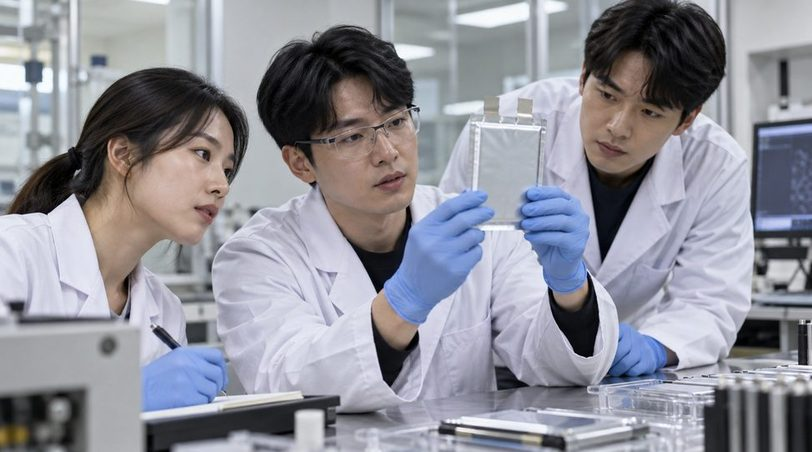

2026.09.04
하이온셀, 국립대 연구팀과 고니켈 양극재 수명 연구 결과 발표
■ 공동 연구팀, 고니켈 양극재의 미세 균열 원인을 충전 속도에서 찾아
■ 20Ah급 파우치 셀에 적용해 1,200회 충·방전 뒤 용량 91% 유지
■ 연구 결과 국내 전지학회 추계 학술대회에서 발표

이미지 다운로드
하이온셀이 국립대 연구팀과 함께 고니켈 양극재의 수명을 늘리는 방법을 찾았다.
4일 하이온셀은 국립대 화학공학과 연구진과 1년 동안 진행한 공동 연구에서, 고니켈 양극재에 생기는 미세 균열이 빠른 충전 조건에서 크게 늘어난다는 사실을 확인했다고 밝혔다.
■ 충전 속도를 단계별로 나눠 균열 줄여… 20Ah급 셀에서 효과 확인
연구팀은 충전 전류를 세 단계로 나눠 흘리는 방식을 적용해 입자 안쪽의 부피 변화를 줄였다. 이 방식을 20Ah급 파우치 셀에 적용한 결과 1,200회 충·방전 뒤에도 처음 용량의 91%를 유지했다.
고니켈 양극재는 같은 무게에서 더 많은 에너지를 담을 수 있지만, 충·방전을 되풀이하면 입자에 금이 가면서 수명이 짧아지는 문제가 있었다.
하이온셀은 이번 결과를 전동공구용 고출력 팩과 전기 운반차용 팩의 충전 알고리즘에 먼저 반영할 계획이다.
하이온셀 기술연구소장은 “셀을 바꾸지 않고도 충전 방법만으로 수명을 늘릴 수 있다는 점을 확인했다”며 “고객이 체감하는 사용 기간을 늘리는 데 연구를 집중하겠다”고 말했다.
■ 전동공구·전기 운반차 팩 충전 방식에 먼저 적용
회사는 올해 안에 전동공구용 5셀 팩과 전기 운반차용 48V 팩의 충전기 설정을 바꿔, 실제 사용 환경에서도 같은 효과가 나타나는지 확인할 예정이다. 고객사 두 곳과는 이미 현장 시험 일정을 잡았다.
충전 방식 변경은 셀 설계를 바꾸지 않아도 되기 때문에 기존 제품에도 소프트웨어 업데이트만으로 적용할 수 있다. 회사는 이미 판매된 팩에도 점검 서비스 때 새 충전 설정을 넣어 줄 계획이다.
연구진은 이번 결과가 고니켈 양극재뿐 아니라 다른 양극재에도 적용될 수 있는지 추가 실험을 이어 가고 있다. 특히 온도가 낮은 환경에서 충전할 때 생기는 수명 저하를 줄이는 방법을 함께 찾고 있다.
국립대 연구팀 책임교수는 “충전 조건과 입자 구조의 관계를 실제 대형 셀에서 확인한 드문 사례”라며 “산업 현장에서 바로 쓸 수 있는 결과라는 점에 의미가 있다”고 설명했다.
하이온셀은 2019년 기술연구소를 충주로 옮긴 뒤 대학·연구기관과의 공동 연구를 해마다 늘려 왔다. 올해에는 셀 진단, 열 관리, 재사용 팩 설계 등 네 가지 과제를 함께 진행하고 있다.
연구 결과는 이달 열리는 국내 전지학회 추계 학술대회에서 발표된다.